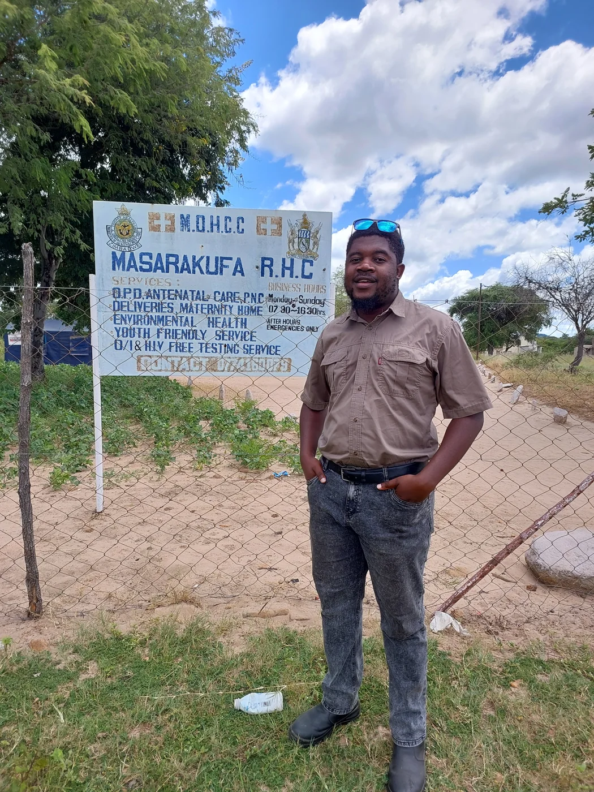

Understanding malaria through place.
With Panashe Nyengera, I analysed malaria records from 31 public health facilities in Mudzi alongside satellite-derived environmental data. Our study explores how environmental conditions, access and delayed effects relate to local malaria patterns.
Read the published study